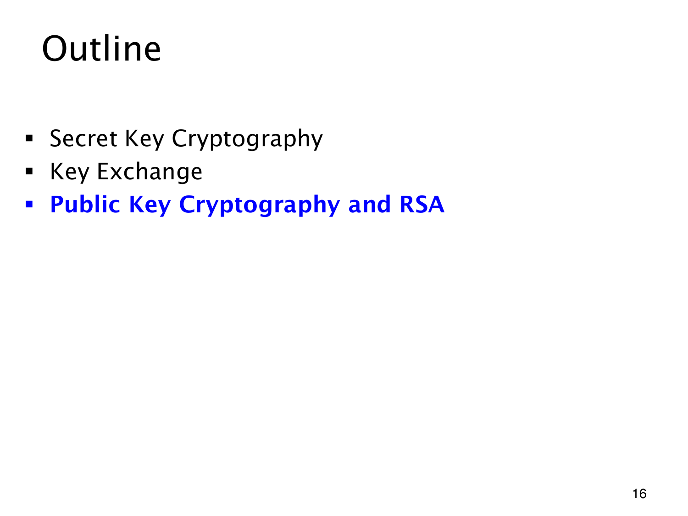

L1.14 · 第 16 页讲解原文
查看这一页课件

公钥与私钥分担不同操作
秘密密钥密码由双方共用秘密，密钥交换帮助双方建立共享值。公钥密码再将加密与解密所需的信息分开：加密信息可以公开，解密信息由接收者私下保留。
目录中的 Public Key Cryptography and RSA 变为蓝色，表示进入最后一部分。RSA 将用整数运算展示这种分工。
接下来仍须分别判断加解密能否互相撤销、公开信息为何难以暴露私密信息，以及公钥怎样可靠绑定到某个人。引入公钥不会自动解决此前的身份认证问题。